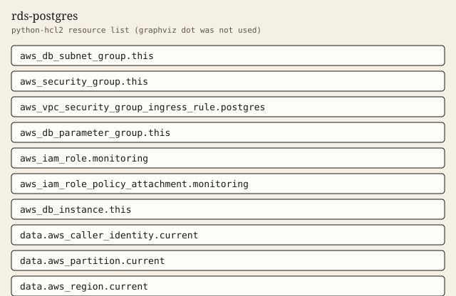

rds-postgres
Encrypted Postgres with security-group ingress and a Secrets Manager master password.
Tests passed 6 of 6. Failed 0.
Inputs
| Name | Type | Required | Description |
|---|---|---|---|
| allocated_storage | number | no | Allocated storage in gibibytes. |
| allowed_security_group_ids | list(string) | yes | Security groups allowed to connect on the Postgres port. CIDR blocks, including 0.0.0.0/0, are not accepted. |
| backup_retention_days | number | no | Automated backup retention in days. |
| database_name | string | no | Initial database name. |
| engine_version | string | no | Postgres engine version. |
| env | string | yes | Environment name. prod turns on deletion protection and requires a final snapshot. dev and staging do not. |
| instance_class | string | no | RDS instance class. |
| master_username | string | no | Master username. The password is not set in this module. RDS stores it in Secrets Manager. |
| monitoring_interval | number | no | Enhanced monitoring interval in seconds. Zero disables it. |
| multi_az | bool | no | Enable a Multi-AZ deployment. |
| name | string | yes | Database identifier, subnet group name, and name prefix. Do not encode an environment into this name; use env. |
| parameter_group_family | string | no | Parameter group family. Must match engine_version. |
| performance_insights | bool | no | Enable Performance Insights. |
| performance_insights_kms_key_arn | string | no | Optional customer managed key ARN for Performance Insights. Null uses the AWS managed key when Performance Insights is on. |
| port | number | no | Postgres port. |
| subnet_ids | list(string) | yes | Private subnet ids for the DB subnet group. At least two. |
| tags | map(string) | no | Extra tags merged onto every taggable resource. ManagedBy and Module are always set by the module. |
| vpc_id | string | yes | VPC that holds the database security group. |
Outputs
| Name | Description |
|---|---|
| backup_retention_days | Automated backup retention in days. |
| caller_context | Account, partition, and region resolved from data sources. |
| deletion_protection | Whether deletion protection is on. True only when env is prod. |
| endpoint | RDS endpoint address. |
| force_ssl | Value of rds.force_ssl in the parameter group. |
| identifier | RDS instance identifier. |
| ingress_cidr_blocks | CIDR blocks on the database security group. This module always leaves the list empty. |
| ingress_security_group_ids | Security group ids allowed to reach Postgres. |
| manage_master_user_password | True when RDS stores the master password in Secrets Manager. This module never sets a password. |
| performance_insights_enabled | Whether Performance Insights is enabled. |
| port | Postgres port. |
| publicly_accessible | Whether the instance is publicly accessible. |
| security_group_id | Security group id attached to the instance. |
| skip_final_snapshot | Whether a final snapshot is skipped. False when env is prod. |
| storage_encrypted | Whether storage encryption is on. |
| tag_audit | Tags on every taggable resource this module creates. |
Example
The caller supplies the region. This example does not embed an account id.
module "db" {
source = "../.."
name = "app-db"
env = "dev"
vpc_id = "vpc-0abc1234def56789"
subnet_ids = ["subnet-0abc1234def56789", "subnet-0abc1234def56780"]
allowed_security_group_ids = ["sg-0abc1234def56789"]
tags = {
Example = "basic"
}
}
Tests
- dev_locked_down passed
- prod_deletion_protection passed
- performance_insights passed
- custom_backup passed
- reject_open_cidr passed
- reject_bad_env passed
Mock plan excerpt
mocked provider: ARNs and IDs are simulated. This excerpt is from terraform test with a mocked provider, not a live plan.
mocked provider: ARNs and IDs are simulated. This is terraform test -verbose, not a live plan.
tests\rds-postgres.tftest.hcl... in progress
run "dev_locked_down"... pass
Terraform used the selected providers to generate the following execution
plan. Resource actions are indicated with the following symbols:
+ create
Terraform will perform the following actions:
# aws_db_instance.this will be created
+ resource "aws_db_instance" "this" {
+ address = (known after apply)
+ allocated_storage = 20
+ apply_immediately = false
+ arn = (known after apply)
+ auto_minor_version_upgrade = true
+ availability_zone = (known after apply)
+ backup_retention_period = 7
+ backup_target = (known after apply)
+ backup_window = "03:00-04:00"
+ ca_cert_identifier = (known after apply)
+ character_set_name = (known after apply)
+ copy_tags_to_snapshot = true
+ db_name = "appdb"
+ db_subnet_group_name = "app-pg"
+ deletion_protection = false
+ domain_fqdn = (known after apply)
+ enabled_cloudwatch_logs_exports = [
+ "postgresql",
+ "upgrade",
]
+ endpoint = (known after apply)
+ engine = "postgres"
+ engine_lifecycle_support = (known after apply)
+ engine_version = "16.4"
+ engine_version_actual = (known after apply)
+ hosted_zone_id = (known after apply)
+ iam_database_authentication_enabled = true
Resources
graphviz dot was not installed. The figure is a python-hcl2 resource list.

Changelog
Changelog
All notable changes to this module are documented in this file.
The format is based on Keep a Changelog, and this module uses Semantic Versioning.
[1.0.0] - 2026-10-03
Added
- Encrypted Postgres, forced SSL, and ingress limited to caller-supplied security groups.
Billable item names
Names only. This page does not quote a price. Example amounts, including a budget limit, are placeholders and are not recommendations. GuardDuty and Security Hub stay off unless a module switch is set, because those services are billable.
- Amazon RDS
- Amazon CloudWatch
- AWS Secrets Manager
- Performance Insights
- RDS Enhanced Monitoring